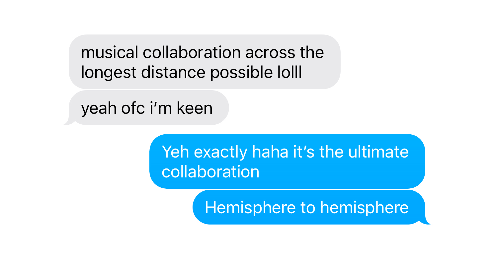
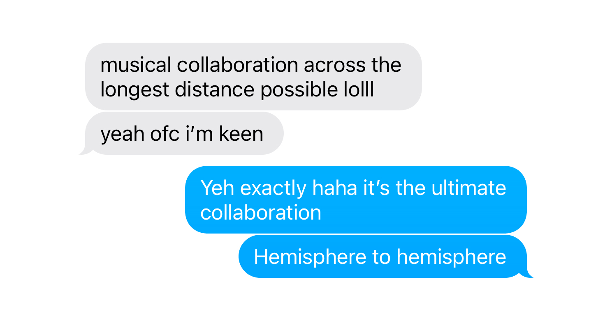

Collaboration
Now we arrive at the idea of collaboration, two or more creatives who create a small system in themselves, but to be successful in collaborating you must give up some control.
Recently, In Unit 6 project 2, I was experimenting the use of graphic Diagrams in Music-based collaboration. A project brief surrounding Diagrams led to me looking at poetry after finding a poem of James Massiah’s, called A real Poem (Massiah, 2018), where he outlines a set of instructions for how to (and who can) listen to real poetry – it’s a satirical piece prodding towards classism and racial separation, in an attempt to erase the idea that poems are meant just for middle and upper class white people in 'cottage' homes. In this context, a diagram exists as a set of instructions. I became interested in the idea of collaboration after looking into James Massiah who collaborates often with other artists. Collaboration is something that hasn’t existed inside my practice up until now, I’ve always been afraid of it, however I value collaboration within the music industry very highly. A conversation with my tutor led to the decision that I should collaborate for this project.
I remembered a statement from Brian Eno and Peter Schmidt’s Oblique Strategies, “Discover the recipes you are using and abandon them” Brian further explains in an interview “that’s not what a computer would do”(Eno, 2006). Oblique Occasions is a set of cards created by the two artists with aphorisms/suggestions on each card intended to help increase creativity and overcome lateral thinking or artist block. Instructions, or perhaps a diagram in a sense, for how to create. I liked this idea of creating a set of instructions to follow. A close friend of mine with a similar interest in electronic music moved away to Australia and I thought this would be the perfect opportunity to collaborate musically. I came up with a short project for us to work on using Diagrams a way to instruct each other how to produce a track.
Image: Screenshot of messages sent between my collaborative partner when I first proposed the project idea.